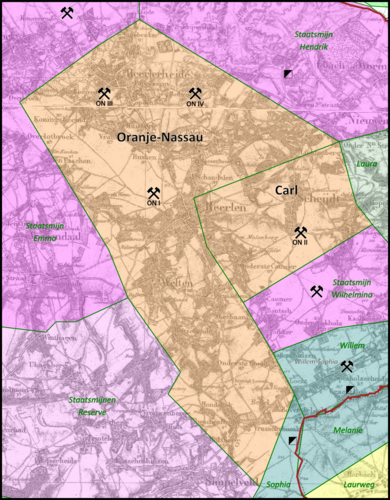

Oranje-Nassau was tussen 1899 en 1974 een particulier mijnbouwbedrijf in Zuid-Limburg voor de winning van steenkool. Het was het grootste particuliere mijnbedrijf in Nederland.
Naam mijn
locatie
jaren in productie
totale productie
Oranje-Nassau I
Heerlen
1899 - 1974
31.978.000 ton
Oranje-Nassau II
Schaesberg (Landgraaf)
1904 - 1971
34.064.000 ton
Oranje-Nassau III
Heerlerheide
1917 - 1973
38.265.000 ton
Oranje-Nassau IV
Heksenberg (Heerlen)
1928 - 1966
13.754.000 ton
Totaal Oranje-Nassau I-IV
1899 - 1974
118.061.000 ton
De productie
De mijnstreken

De sluiting
In de jaren zestig werden de mijnen steeds minder rendabel, mede door de import van goedkopere steenkool uit het buitenland, en onder het Kabinet-Den Uyl is in 1974 aan de steenkoolwinning een einde gekomen. De snelle exploitatie van de grote aardgasvondst in Groningen maakte de noodzaak van een eigen steenkoolindustrie ook minder noodzakelijk.